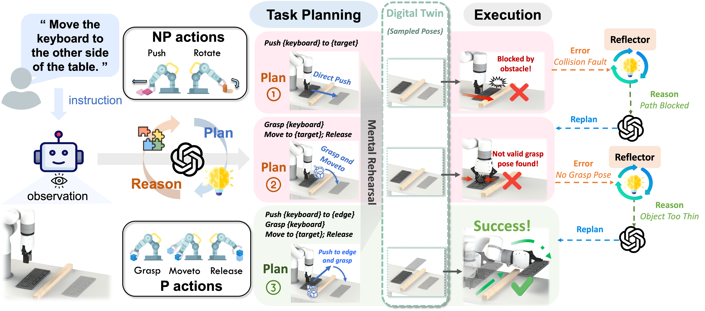

Fig. 1: Pipeline of AdaptPNP: Starting from an instruction and scene image, the task planner generates an initial plan (e.g., direct push), which is mentally rehearsed in the digital twin to sample a 6D target pose. After execution fails, the reflector analyzes the error and provides insight to the planner, which replans (e.g., grasp-and-move). This loop continues until the successful plan (push-to-edge-then-grasp) completes the task.
Non-prehensile (NP) manipulation, in which robots alter object states without forming stable grasps (for example, pushing, poking, or sliding), significantly broadens robotic manipulation capabilities when grasping is infeasible or insufficient. However, enabling a unified framework that generalizes across different tasks, objects, and environments while seamlessly integrating non-prehensile and prehensile (P) actions remains challenging: robots must determine when to invoke NP skills, select the appropriate primitive for each context, and compose P and NP strategies into robust, multi-step plans.
We introduce AdaptPNP, a vision-language model (VLM)-empowered task and motion planning framework that systematically selects and combines P and NP skills to accomplish diverse manipulation objectives. Our approach leverages a VLM to interpret visual scene observations and textual task descriptions, generating a high-level plan skeleton that prescribes the sequence and coordination of P and NP actions. A digital-twin based object-centric intermediate layer predicts desired object poses, enabling proactive mental rehearsal of manipulation sequences. Finally, a control module synthesizes low-level robot commands, with continuous execution feedback enabling online task plan refinement and adaptive replanning through the VLM.
We evaluate AdaptPNP across representative P&NP hybrid manipulation tasks in both simulation and real-world environments. These results underscore the potential of hybrid P&NP manipulation as a crucial step toward general-purpose, human-level robotic manipulation capabilities.
Simulated tasks

Real-world tasks

We evaluate AdaptPNP on a spectrum of P&NP hybrid manipulation scenarios, including eight simulated tasks (left column) and four real-world tasks (right column). In each scene, the final target pose is shown as a translucent object, and the target region is indicated by a yellow overlay (e.g., Bar, Hook).
@article{zhu2025adaptpnp,
title = {AdaptPNP: Integrating Prehensile and Non-Prehensile Skills for Adaptive Robotic Manipulation},
author = {Zhu, Jinxuan and Tie, Chenrui and Cao, Xinyi and Wang, Yuran and Guo, Jingxiang and Chen, Zixuan and Chen, Haonan and Chen, Junting and Xiao, Yangyu and Wu, Ruihai and Shao, Lin},
journal = {arXiv preprint arXiv:2511.11052},
year = {2025}
}